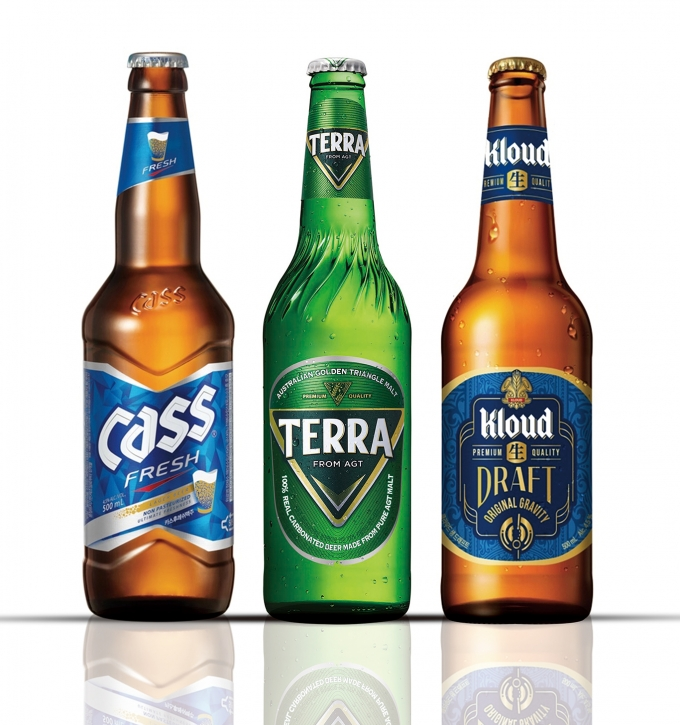

[주재료]
소주 1병, 맥주 1병, 사이다 1캔
소주잔 2개, 맥주잔 1개
뉴스
레시피 |
제품 |


식사대용 | 술자리 인싸 되기 | 조회수 15000
코로나시국, 여러분들 이제 지치시죠? 그렇게 지칠떈 뭐다? 아 또 술이다~ 근데 여러분, 저처럼 술을 못마시는 분들은 술을 한입도 마시기 싫을거라고 생각해요!
그런 분들을 위해, 오늘은 맛도 있고! 취하기도 적당히 취하는 소맥 레시피를 공개를 하겠습니다~!
1.소주는 무조건 참이슬 fresh를 사용하자!

여러분들은 어떤 술을 좋아하시나요? 저는 무조건 참이슬 후레쉬랍니다 ^^
그러니까 이번엔 후레쉬를 이용해서 소맥을 제조해볼거예요!
2.맥주는 브랜드 상관없이 있는것을 쓰자!
한국에서 주로 술집에서 볼 수 있는 맥주는 사실 맛이 다 비슷한것을 여러분이 아실거예요!
그래서 맥주는 상관없이! 각자 취향에 맞게 써주시면 됩니다.
[주재료]
소주 1병, 맥주 1병, 사이다 1캔
소주잔 2개, 맥주잔 1개
1. 소주잔 반잔만큼이 찰 정도로 소주를 따른 후 맥주잔에 부은다.
2. 소주잔 꽉 찰 만큼 맥주를 따른 후 맥주잔에 부은다.
3. 맥주와 같은 양의 사이다를 맥주잔에 부은다.
4. 숟가락을 이용하여 액체를 섞어준다.
5. 이대로하면 여러분들을 술자리 인싸로 만들어주는 황금 소맥 제조법 완성!!
다음 시간에는 여러분들과 함께 고진감래주를 만들어 보는 시간을 가져보도록 하겠습니다.
숙제로 그때까지 모두 술자리에서 이번 레시피를 이용해서 인싸가 되어봐요!!!
1. 소주잔 반잔만큼이 찰 정도로 소주를 따른 후 맥주잔에 부은다.
2. 소주잔 꽉 찰 만큼 맥주를 따른 후 맥주잔에 부은다.
3. 맥주와 같은 양의 사이다를 맥주잔에 부은다.
4. 숟가락을 이용하여 액체를 섞어준다.
5. 이대로하면 여러분들을 술자리 인싸로 만들어주는 황금 소맥 제조법 완성!!
소맥을 n배로 맛있게!! 인싸 소맥 제조법